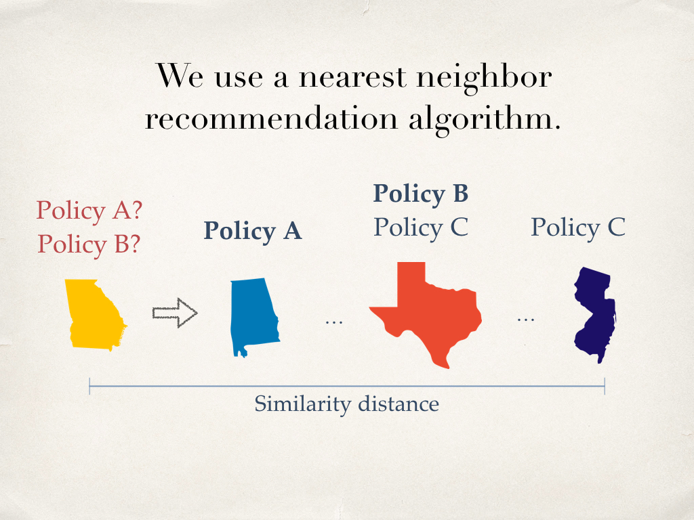

Gender and Ideology in the Spread of Anti-Abortion Policy
Authors
Amy X. Zhang, MIT CSAILScott Counts, Microsoft Research
Abstract
In the past few years an unprecedented wave of anti-abortion policies were introduced and enacted in state governments in the U.S., affecting millions of constituents. We study this rapid spread of policy change as a function of the underlying ideology of constituents. We examine over 200,000 public messages posted on Twitter surrounding abortion in the year 2013, a year that saw 82 new anti-abortion policies enacted. From these posts, we characterize people's expressions of opinion on abortion and show how these expressions align with policy change on these issues. We detail a number of ideological differences between constituents in states enacting anti versus pro-abortion policies, such as a tension between the moral values of purity versus fairness, and a differing emphasis on the fetus versus the pregnant woman. We also find significant differences in how males versus females discuss the issue of abortion, including greater emphasis on health and religion by males. Using these measures to characterize states, we can construct models to explain the spread of abortion policy from state to state and project which types of abortion policies a state will introduce. Models defining state similarity using our Twitter-based measures improved policy projection accuracy by 7.32% and 12.02% on average over geographic and poll-based ideological similarity, respectively. Additionally, models constructed from the expressions of male-only constituents perform better than models from the expressions of female-only constituents, suggesting that the ideology of men is more aligned with the recent spread of anti-abortion legislation than that of women.
Presentation
This talk was given at CHI 2016 in San Jose, CA.
So, when I started working with Scott, our goal was to try to understand and measure how people in a state are discussing an issue, in order to link that information to policy change in a state to see whether we could better predict policy change.
And we focused on areas that had seen a big shift in policy in recent years, such as same-sex marriage legalization, which was a study I presented at CHI last year.
And now I'm presenting some followup work looking at the issue of abortion, another topic that has seen a wave of new policies recently, and it's also a topic that I personally find very interesting!
So some background on what's been going on - Abortion access has changed dramatically in the last several years in many states in the U.S.
Here is a figure from the Guttmacher Institute, an institute that tracks data regarding women's health and reproduction. New laws that restrict abortion have skyrocketed in the last several years, starting in 2011.
In fact, in just the period of 2011 to 2013, there were more legislations passed restricting abortion than in the entire previous decade.
If you're a fan of John Oliver, (if you don't know him - you should check him out), you may have caught a recent episode actually where he examined these laws in more detail.
One result of all these new abortion restrictions is increased disparity from state to state when it comes to abortion access.
So while there are very few laws expanding abortion access in this time period, (I think there were like less than 5, compared to 231 on the anti-abortion side), as a result,
the large increase in anti-abortion laws is creating greater variation from state to state.
As one example of the effect this has - this shows the change in clinics in the course of 4 years.
We can see that many states lost 20% or more of their clinics in the span of 3 years.
So then the question that we were concerned with in this work was,
how much of this shift can be reflected in the will of the people?
So wrapped up in that question is:
1) How can we measure the will of the people, in this case, constituents, around this issue?
2) Is our measure of the will of constituents helpful for predicting the spread of policy?
3) Can we potentially quantify biases in how the will of the people affects policy? And in this case, we look specifically at gender.
So now to that first question of measuring the will of the people.
For our work, we choose to look at the language that constituents use when they talk about abortion in order to get a deeper understanding of the ideologies that they are expressing as well as their emotions around the issue.
To gather these expressions, we look to Twitter data, where people can freely and publicly express their opinions on any topic.
And in order to get a sense of ideology, we look at specific categories and uses of language, some of which is informed by prior work that has explored the values and biases wrapped up in language usage around abortion in places like Supreme Court briefs and mass media. For instance, using the word "fetus" versus "baby", or using the term "woman" versus "mother".
And from our understanding of the ideology and emotion of constituents, we want to link that towards
the policies that get enacted within a state.
So from state level aggregation of overall language usage,
can we map that to the types of bills that get passed in the state.
So first let me describe our data in more detail.
In terms of policy data, we collected all the policy events that occurred from 2011 to 2013, where a policy event is something that happened, such as a house vote, a senate vote, or a governor signing. And we collect whether that policy is pro- or anti abortion and also whether it succeeded or failed. We also classify these policies into 45 main categories which are provided by the Guttmacher Institute.
Here are just a few examples of major categories to give you a sense of the diversity of laws that were passed - for instance, limiting abortion coverage in various healthcare programs, adding counseling requirements, such as counseling patients about fetal pain or health risks associated with abortion, establishing clinic regulations, such as requiring hospital admitting privileges. There are quite a few more.
We also collected data from the Twitter Firehose. We searched for several key terms and hashtags around abortion just from the year 2013, which we chose because it came at the tail end of this burst of new policies. From the million or so tweets, we then tried to tag each user that tweeted to a specific state. I don't want to go into too much detail on how we did that but at a high level it was through matching terms from the text profile location field that users can enter as opposed to looking only at tweets with latitude and longitude which is a much, much smaller data set.
And we also tried to gender tag a binary classification of Male and Female to each user based on their user profile name. And for that, again at a high level, we used a dictionary of names tagged with gender validated by other researchers.
Now I'll get to how we classified various aspects of language into specific categories that signified aspects of ideology or emotion.
We used LIWC as a methodology, which is a set of dictionaries hand curated by linguists and political psychologists, and we found the average occurrence of terms from each dictionary within a tweet across a selection of people, such as a state constituency.
One group of things that we looked at was the moral values that the author is expressing.
Here are a few examples of tweets and the terms from each tweet that were in that category's dictionary. And the text of all the tweets have been altered slightly in order to protect the authors. I'll give you a second to glance over them.
We also picked some other types of categories that we felt were pertinent to the issue of abortion.
And here are some examples of tweets from just three of those categories.
Here is an example of a tweet that has terms from several different categories and is quite directly getting at this idea of ideology and inherent values that we are trying to understand.
As mentioned, we also captured some different categories related to emotions as well as the level of certainty expressed.
So now turning towards some of our results. First I'll characterize some of the discussion and language around abortion from our data in relation to policy change.
Before I do that, I'll explain the abortion policy score that we attributed to each state, which is at a high level just the number of pro abortion policy events minus the number of anti-abortion policy events in that state. At the far ends we have Kansas on one side and Washington on the other side.
So here, for each measure, we correlate that Twitter measure that we are collecting per state with the abortion policy score of that state. And this graph shows the different correlations for each of the different Twitter measures.
Focusing on the measures that correlated in the direction of anti-abortion policy, just to highlight a few things, since I don't have a ton of time.
It's unsurprising that "death" is the measure with the greatest correlation here, with many tweets attributing abortion to taking away a life, so this is getting at that "pro-life" framing that anti-abortionists use.
We also see "baby" here, which is in agreement with prior work that showed that when terms like "fetus" or "baby" are used, that lends a particular framing or bias.
We also see that abortion is still very related to people's values around religion and chastity.
On the pro-abortion side, we see that...
woman is the most correlated term, which is in alignment with prior work that has demonstrated for pro-abortionists a heavier emphasis on the health, wellbeing, and autonomy of the woman as opposed to the fetus.
We also see the sex category here. Digging into some of the tweets that were tagged to this category, we saw quite a number mentions "rape" which is a reason that pro-abortionists cite for why abortion should be allowed.
And finally, we have fairness here which sort of encapsulates the "pro-choice" framing that pro-abortionists use.
Breaking it down by gender, we calculated the average occurrence of each measure for both women and men and found the measures with the greatest difference.
Plotted here is the effect size, which quantifies the difference between two groups, calculated using cohen's D.
We can see that on the male side, there are a few more measures that correlated with anti-abortion
while on the female side, there are a few more measures on the pro-abortion side.
We wanted to see if these differences were perhaps due to overall differences between males and females on Twitter. These red bars show effect size from a smaller random sample of overall Twitter that we took from the Streaming API. Overall, effect sizes were much smaller than from our abortion dataset when they were in the same direction or they were sometimes even in the opposite direction, such as health in this case.
Now I'm going to talk about how we try to model how different policies get diffused from state to state in order to better predict the types of policies a state will pass.
So one thing that political scientists have shown time and time again, is that states learn from and emulate the previously enacted policies of similar states. So for instance, a state like Georgia, which is known as a pretty conservative southern state in what is known as the "Bible Belt" or "Deep South" in the US will look more towards a state like Alabama, its neighbor and also a very conservative state, for policy ideas
than it would look towards a state like New Jersey, that is farther away in the north and generally more liberal than Georgia.
So knowing that, then we can project what kinds of policies a state will introduce by looking at similar states. We model this using a nearest neighbor algorithm.
Say there is some similarity metric between every pair of states.
Then for a state, we can rank all the other states by this similarity metric and recommend new policies for the state based on what the nearest states have already done.
For instance, if we're trying to predict policies for Georgia. Say the most similar state is Alabama and it has Policy A in place
and another state that is a little bit less similar, Texas, has Policy B and Policy C
And another state that is not very similar to Georgia like New Jersey has Policy C in place.
Then the policies that we recommend to Georgia would be
Policy A first...

followed by maybe policy B.
I'll note that there are many different potential measures of similarity between states. So say we use a different similarity metric and now Texas is most similar to Georgia.
Then in this case we might recommend Policy B first instead of Policy A
So then, how might we determine similarity between different states?
We try the following different potential measures of similarity to build our nearest neighbor models.
Some measures are informed by prior political science work. For instance, some work has shown that ideologically similar states are more likely to copy each other. Other work has found that geographically close states are more likely to copy each other.
We test these against our Twitter measures as an additional measure of similarity, using cosine similarity.
We also created two baseline models that predicts a policy for a state based on the most popular policies in place at the time across the U.S. and another model that assigns policies at random.
So the final task seeks to accurately model what type of policy a state will pass given only the different similarity data about the states from the time before the state passes the policy.
There are 45 classes of abortion policy from our dataset, which makes this task quite difficult - there's only a 2% chance just by guessing.
We do this for the year 2013, which saw 82 abortion policies enacted.
And here are our results testing the different similarity metrics. We show the results increasing the number of policies recommended by the model on the x axis. This is because 45 different classes of policy is quite fine-grained, and it's still potentially useful to get an idea of the different types of policies that are likely to pass in a state instead of just one.
While all the metrics we test do better than chance, we found that the Twitter measures performed the best overall, and that geographic distance was more predictive of policy diffusion than ideology.
We also found that the popular baseline actually did quite well, perhaps due to the skew in our data of some policies being very popular in 2013.
We also tried to build the same models using just Twitter measures collected from tweets made by males and tweets made by females. Overall, we saw that the measures collected from male Twitter users were a better predictor of the types of policies a state would pass than measures from female Twitter users.
I wanted to end with what I think are the most interesting pieces of future work to be done in this area around policy diffusion and predicting policy change from the signals of everyday constituents.
For instance, we looked at gender but there's a lot more to unpack when thinking about potential biases, such as one's race, or the amount of lobbying, or the efforts of people in government, such as gerrymandering or voter suppression laws.
Thank you!